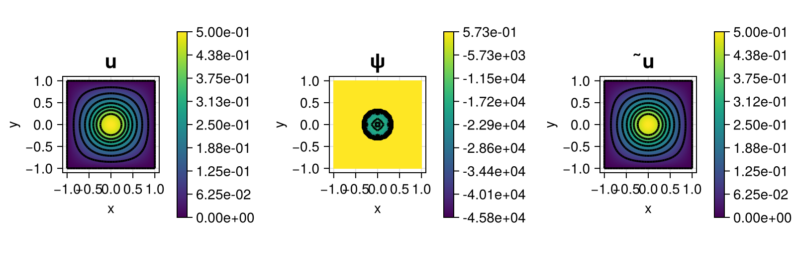

227 : Obstacle Problem LVPP
This example computes the solution $u$ of the nonlinear obstacle problem that seeks the minimiser of the energy functional
\[\begin{aligned} E(u) = \frac{1}{2} \int_\Omega \lvert \nabla u \rvert^2 dx - \int_\Omega f u dx \end{aligned}\]
with some right-hand side $f$ within the set of admissible functions that lie above an obstacle $\chi$
\[\begin{aligned} \mathcal{K} := \lbrace u \in H^1_0(\Omega) : u \geq \chi \rbrace. \end{aligned}\]
Opposite to Example225 the solution is computed by the latent variable proximal point (LVPP) method that solves the problem via a series of nonlinear mixed problems that guarantee the decay of the energy. Given $\alpha_k$ and initial guesses $u_0$ and $\psi_0$, the subproblem for $k \geq 1$ seeks a solution $u_{k} \in V := H^1_0(\Omega)$ and $\psi_{k} \in W := L^\infty(\Omega)$ such that
\[\begin{aligned} \alpha_k (\nabla u_k, \nabla v)_{L^2} + (\psi_k, v)_{L^2} & = (\alpha_k f + \psi_{k-1},v)_{L^2} && \text{for all } v \in V\\ (u_k, w)_{L^2} - (\chi + \exp(\psi_k), w)_{L^2} & = 0 && \text{for all } w \in W \end{aligned}\]
The parameter $\alpha_k$ is initialized with $\alpha_0 = 1$ and updated according to $\alpha_k = \min(\max(r^(q^k) - α), 10^3)$ with $r = q = 1.5$. The problem for each $k$ is solved by the Newton method. This implements Algorithm 3 in the reference below.
''Proximal Galerkin: A Structure-Preserving Finite Element Method for Pointwise Bound Constraints'', Brendan Keith, Thomas M. Surowiec, Found Comput Math (2024), >Link<

module Example227_ObstacleProblemLVPP
using ExtendableFEM
using ExtendableFEMBase
using ExtendableGrids
using LinearAlgebra
using Metis
# define obstacle
const b = 9 // 20
const d = sqrt(1 // 4 - b^2)
function χ(x)
r = sqrt(x[1]^2 + x[2]^2)
return r <= b ? sqrt(1 // 4 - r^2) : d + b^2 / d - b * r / d
end
# transformation of latent variable ψ to constrained variable u
function ∇R!(result, input, qpinfo)
return result[1] = χ(qpinfo.x) + exp(input[1])
end
# boundary data for latent variable ψ (such that ̃u := χ + ∇R(ψ) satisfies Dirichlet boundary conditions)
function bnd_ψ!(result, qpinfo)
return result[1] = log(-χ(qpinfo.x))
end
function main(;
nrefs = 5,
α0 = 1.0,
order = 1,
parallel = false,
npart = 8,
tol = 1.0e-12,
Plotter = nothing,
kwargs...
)
# choose initial mesh
xgrid = uniform_refine(grid_unitsquare(Triangle2D; scale = (2, 2), shift = (-0.5, -0.5)), nrefs)
if parallel
xgrid = partition(xgrid, RecursiveMetisPartitioning(npart = npart))
end
# create finite element space
FES = [FESpace{H1Pk{1, 2, order}}(xgrid), FESpace{H1Pk{1, 2, order}}(xgrid)]
# init proximal parameter
α = α0
# prepare Laplacian and mass matrix
L = FEMatrix(FES[1], FES[1])
assemble!(L, BilinearOperator([grad(1)], [grad(1)]; parallel = parallel))
function scaled_laplacian!(A, b, args; assemble_matrix = true, assemble_rhs = true, kwargs...)
return if assemble_matrix
# add Laplacian scaled by α
ExtendableFEMBase.add!(A, L.entries; factor = α)
end
end
M = FEMatrix(FES[1], FES[2])
b = FEVector(FES[1])
assemble!(M, BilinearOperator([id(1)], [id(1)]; parallel = parallel))
# problem description
PD = ProblemDescription()
u = Unknown("u"; name = "solution")
ψ = Unknown("ψ"; name = "latent variable")
assign_unknown!(PD, u)
assign_unknown!(PD, ψ)
assign_operator!(PD, CallbackOperator(scaled_laplacian!, [u]; kwargs...))
assign_operator!(PD, BilinearOperator([id(u)], [(id(ψ))]; transposed_copy = 1, store = true, parallel = parallel, kwargs...))
assign_operator!(PD, NonlinearOperator(∇R!, [id(ψ)], [id(ψ)]; parallel = parallel, factor = -1, kwargs...))
assign_operator!(PD, HomogeneousBoundaryData(u; regions = 1:4, kwargs...))
assign_operator!(PD, InterpolateBoundaryData(ψ, bnd_ψ!; regions = 1:4, kwargs...))
assign_operator!(PD, LinearOperator(b, [u]; kwargs...))
# solve
sol = FEVector(FES; tags = PD.unknowns)
sol_prev = FEVector(FES; tags = PD.unknowns)
SC = nothing
r, q = 3 // 2, 3 // 2
converged = false
k = 0
while !converged
k += 1
@info "Step $k: α = $(α)"
# save previous solution and update right-hand side
b.entries .= M.entries * view(sol[ψ])
sol_prev.entries .= sol.entries
# solve nonlinear problem
sol, SC = solve(PD, FES, SC; init = sol, maxiterations = 20, verbosity = -1, timeroutputs = :hide, return_config = true, kwargs...)
niterations = length(ExtendableFEM.residuals(SC))
# compute distance
dist = norm(view(sol[u]) .- view(sol_prev[u]))
@info "dist = $dist, niterations = $(niterations - 1)"
if dist < tol
converged = true
else ## increase proximal parameter
α = min(max(r^(q^k) - α), 10^3)
end
end
# postprocess latent variable v = ϕ + exp ψ = ∇R!(ψ)
u2 = Unknown("̃u"; name = "solution 2")
append!(sol, FES[1]; tag = u2)
lazy_interpolate!(sol[u2], sol, [id(ψ)]; postprocess = ∇R!)
# plot
plt = plot([id(u), id(ψ), id(u2)], sol; Plotter = Plotter, ncols = 3)
return sol, plt
end
end # moduleThis page was generated using Literate.jl.